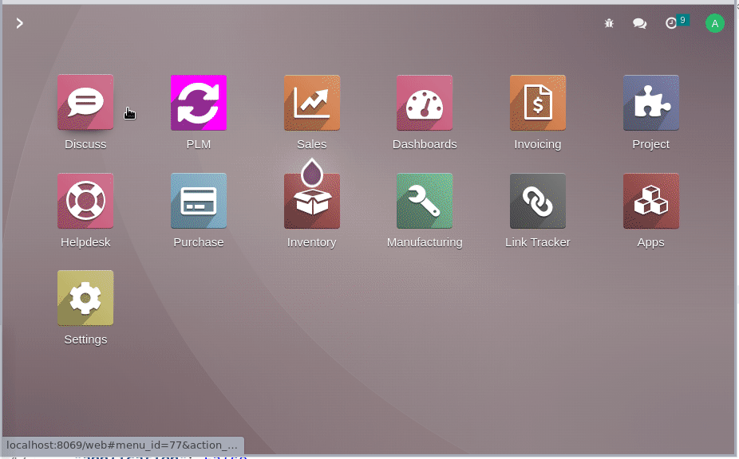

<section class="oe_container">
    <div class="oe_row oe_spaced">
        <div class="oe_span12">
            <h2 class="oe_slogan" style="color:#875A7B">Product LifeCycle Management Workflow acrions<br>
               
            </h2>
            <h3 class="oe_slogan">Automate your workflow actions easely with odoo automated action</h3>
	            
        </div>
    </div>
</section>
